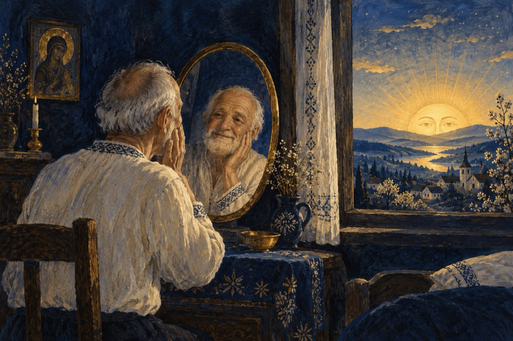

În fiecare dimineață
În fiecare dimineață
Mă trezesc mai bătrân.
Cu bucuria că mai sunt în viață,
Din inimă o spun
În fiecare dimineață
Scăp ochii în oglindă
Când mă spăl pe dinți, pe față
Și văd cum anii stau la pândă
În fiecare dimineață
Observ cu bucurie
La orizont, un alt soare răsare
Și asta îmi crează un moment de fericire!
Și fiecare dimineață
Nu seamănă cu cea de ieri
Fața e tot mai creață
Pe tâmple apar albii peri!
În fiecare dimineață
Mă scol voios și nu mă dau bătut
O luptă este-n a mea viață
Și mai am multe de făcut.
În fiecare dimineață
Îmbătrânesc, nu-mi pare rău
Mă rog, mă-nchin, e o povață
Și-i mulțumesc lui Dumnezeu!
Vasile Groza